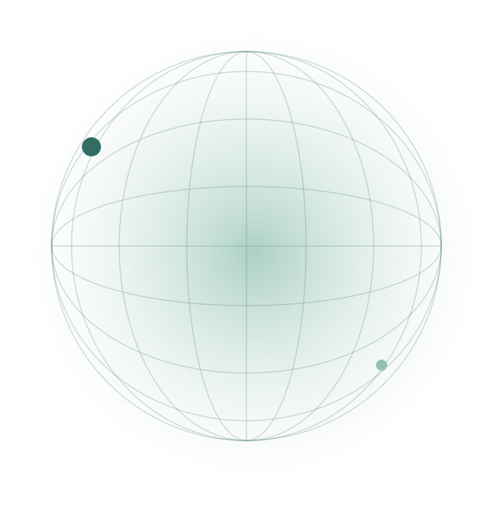
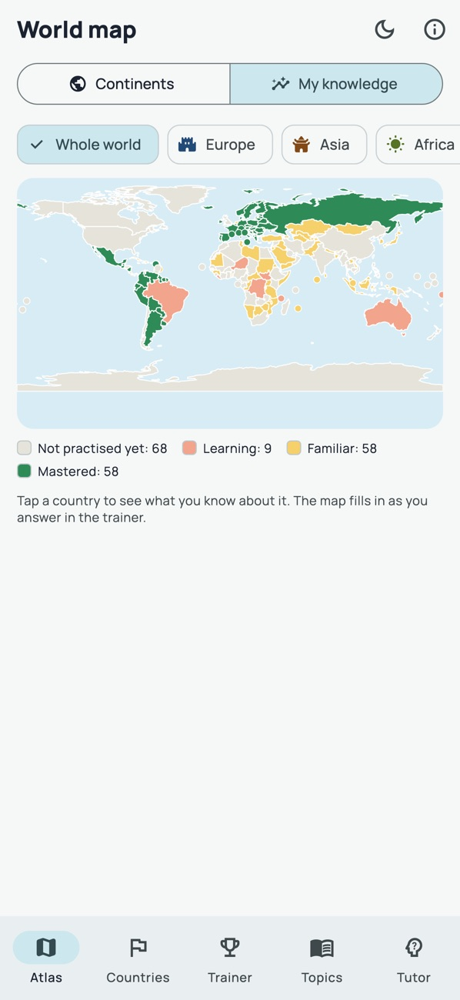

ہر ملک سے متعارف ہوں۔
جھنڈوں، دارالحکومتوں، رقبے، آبادی، کرنسیوں اور زبانوں کے لیے انٹرایکٹو نقشہ استعمال کریں۔ زوم ان کریں اور تفصیلات تلاش کریں۔
دنیا اچھے سوالات سے بھری ہوئی ہے۔
دنیا کو اپنے لیے مزید آشنا بنائیں۔
اٹلس دیکھیں، جھنڈے اور دارالحکومت سیکھیں اور نامعلوم جگہ کو ایک جانی پہچانی جگہ بنائیں۔
مفت ڈاؤن لوڈ · اختیاری پرو خصوصیات


ایپ کا اصل اسکرین شاٹ
خصوصیات
جھنڈوں، دارالحکومتوں، رقبے، آبادی، کرنسیوں اور زبانوں کے لیے انٹرایکٹو نقشہ استعمال کریں۔ زوم ان کریں اور تفصیلات تلاش کریں۔
جھنڈوں، دارالحکومتوں اور نقشوں کی مشق کریں، یا نقشے پر کسی ملک کو تلاش کرنے کے لیے وقت کے ساتھ مقابلہ کریں۔ جائزہ لینے سے وہ ممالک دوبارہ یاد آتے ہیں جب آپ کو ان کی ضرورت ہوتی ہے۔
طبیعی اور انسانی جغرافیہ پڑھیں۔ پرو میں ممالک کا موازنہ، لامحدود تربیت اور آپ کی بڑھتی ہوئی مہارت کا نقشہ شامل ہے۔
ایپ دیکھیں
اصلی اسکرینیں۔ اس سے آپ کو اس کے اندر موجود مواد کا بہتر اندازہ ہوگا۔
FAQ
شروع کرنے سے پہلے اہم سوالوں کے جواب
جی ہاں۔ انسٹال کرنے کے بعد ہینڈ بک اور حوالہ جاتی مواد آف لائن دستیاب ہوتے ہیں۔ Apple Intelligence کی خصوصیات کے لیے مطابقت پذیر ڈیوائس اور ڈاؤن لوڈ کیا گیا سسٹم ماڈل بھی درکار ہے۔
ایپ مفت ڈاؤن لوڈ کی جا سکتی ہے۔ ہینڈ بک Pro کے بغیر بھی مفید ہے؛ اضافی تعلیمی ٹولز اور AI کی خصوصیات ہر ایپ کے Pro پلان پر منحصر ہیں۔ موجودہ اختیارات App Store اور ایپ میں خریداری کے صفحے پر دیکھیں۔
نہیں۔ آپ اس کے بغیر ہینڈ بک پڑھ اور استعمال کر سکتے ہیں۔ AI ٹیوٹر اختیاری ہے؛ اس کے لیے مطابقت پذیر iPhone یا iPad اور فعال Apple Intelligence درکار ہیں۔ دستیاب زبانیں سسٹم پر منحصر ہیں۔
ایپ iPhone اور iPad کے لیے دستیاب ہے۔ موجودہ سسٹم اور ڈیوائس کی ضروریات App Store کے صفحے پر دیکھیں۔
مفت ڈاؤن لوڈ · اختیاری پرو خصوصیات
AI ٹیوٹر Pro کی ایک سہولت ہے۔ اس کے لیے موافق iPhone یا iPad، iOS/iPadOS 26 یا بعد کا ورژن اور فعال Apple Intelligence درکار ہے۔ دستیابی زبان اور خطے کے لحاظ سے مختلف ہے۔ AI کے جوابات میں غلطیاں ہو سکتی ہیں۔